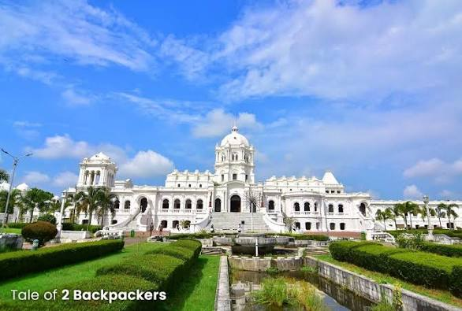
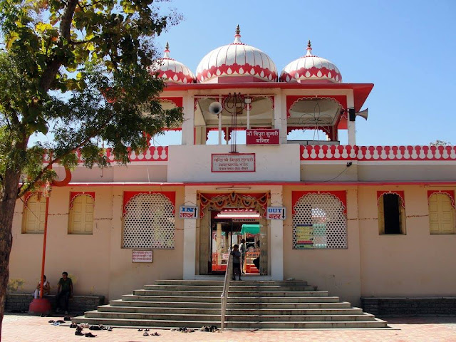
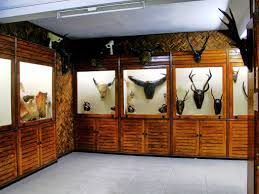
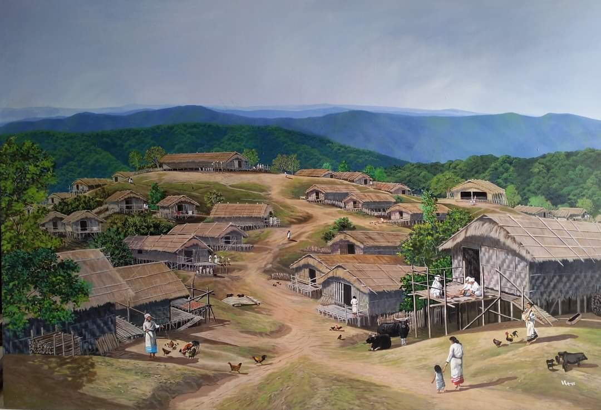
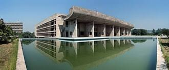
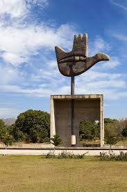

TRIPURA
Ujjayanta Palace

Ujjayanta Palace was built in 1901 by Maharaja Radha Kishore Manikya.
It is a beautiful palace with gardens and museums. The palace has white
color walls and looks very grand. Now it is a museum where people can
see old things from Tripura.
Neermahal Palace

Neermahal is a water palace. It was built in 1930 in the middle of a
lake called Rudrasagar. The palace is red and white in color. Kings
used to come here in summer. People can go by boat to visit this palace.
Tripura Sundari Temple

This temple is very old. It was built in 1501. People worship Goddess
Tripura Sundari here. The temple is made in Bengali style. Many people
visit this temple every year.
MIZORAM
Solomon's Temple

Solomon's Temple was built in 1996. It is 122 feet tall. The temple
looks like an old temple from the Bible. It has 12 prayer halls. From
the top, you can see the whole city of Aizawl.
Mizoram State Museum

This museum shows the culture of Mizo people. You can see old clothes,
jewelry, and tools used by tribal people. The museum helps us learn
about how Mizo people lived in old times.
Traditional Mizo Villages

Old Mizo villages have houses made of bamboo. People live in a simple
way. They have community halls where people meet. These villages show
us the old customs and traditions of Mizoram.
CHANDIGARH
Rock Garden

Rock Garden was made by Nek Chand in 1957. He used broken pieces of
bangles, tiles, and bottles to make beautiful statues. The garden has
thousands of sculptures. It is a very creative and unique place.
Capitol Complex

Capitol Complex was designed by Le Corbusier in 1950s. It has big
government buildings like Assembly, Secretariat, and High Court. The
buildings are made of concrete. It is a UNESCO World Heritage Site.
Open Hand Monument

The Open Hand Monument is 26 meters high. It was built in 1985. The
hand is the symbol of Chandigarh. It means "open to give and open to
receive". It stands for peace and friendship.